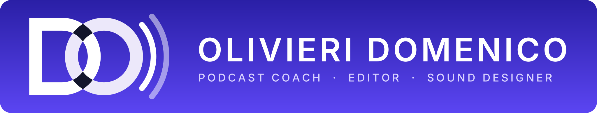

DomePodcast Studio
Guida del brand di Olivieri Domenico – podcast coach, editor e sound designer. @domenicoolivieri_
Logo

- Si usa sempre il logo ufficiale (icona DO su indaco); le varianti in
brand/logo/varianti/solo se il fondo lo richiede. - Non si ridisegna né si deforma. Spazio libero attorno: almeno metà dello spessore della D.
- Il logo mantiene i suoi colori indaco/arancione: non va ricolorato con la palette dei post.
Palette dei post
Viola#2E1976 · titoli, testo, triangoli
Arancione#EE8F4D · titoli, triangoli, frecce
Giallo-arancio#F4B162 · slide piene, icone
Lilla#A98BEE · icone
Bianco#FFFFFF · sfondo
Colori del solo logo: indaco #2A1FA6→#5B45F2 e arancione #FF5A00. Unica fonte nel codice: assets/brand.css.
Font
Titoli in Staatliches
Maiuscolo condensato
Libre Baskerville per testi, intestazione e inviti.
Il carattere dei titoli originali (CS Gordon Serif di Canva) ha licenza: al suo posto si usa Staatliches, libero (OFL). Font salvati in fonts/, nessun collegamento a internet.
Regole d'uso
- Sfondo bianco; titoli viola o arancione; slide piena giallo-arancio con testo bianco.
- Copertine: triangolo diagonale in alto a sinistra, titolo maiuscolo a destra, freccia per scorrere.
- Slide interne: intestazione in alto a sinistra (foto tonda, nome, descrizione) e triangolo in basso a destra.
- Foto con angoli tondi e bordi sfumati. Poche decorazioni, tinte piatte.
Tono di voce
Diretto e caldo, dai del tu. Frasi corte, inviti brevi: «Sbircia!», «Scopriamolo insieme!», «Chiedilo nei commenti!». Un tocco di ironia leggera tra parentesi, mai sopra le righe. I testi li scrive Niky: l'app non li riscrive.